PAKISTAN

Pakistan,officially the Islamic Republic of Pakistan, is a country in South Asia. It is the world's fifth-most populous country, with a population of almost 227 million, and has the world's second-largest Muslim population. Pakistan is the 33rd-largest country by area, spanning 881,913 square kilometres (340,509 square miles). It has a 1,046-kilometre (650-mile) coastline along the Arabian Sea and Gulf of Oman in the south, and is bordered by India to the east, Afghanistan to the west, Iran to the southwest, and China to the northeast. It is separated narrowly ... Read More
Sindh is one of the four provinces of Pakistan. Located in the southeastern region of the country, Sindh is the third-largest province of Pakistan by total area and the second-largest province by population after Punjab. It shares land borders with the Pakistani provinces of Balochistan and Punjab to the north, respectively, and the Indian states of Gujarat and Rajasthan to the east; it is also bounded by the Arabian Sea to the south. Sindh's landscape consists mostly of alluvial plains flanking the Indus River, the Thar Desert in the eastern portion of Read More..

 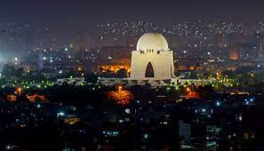
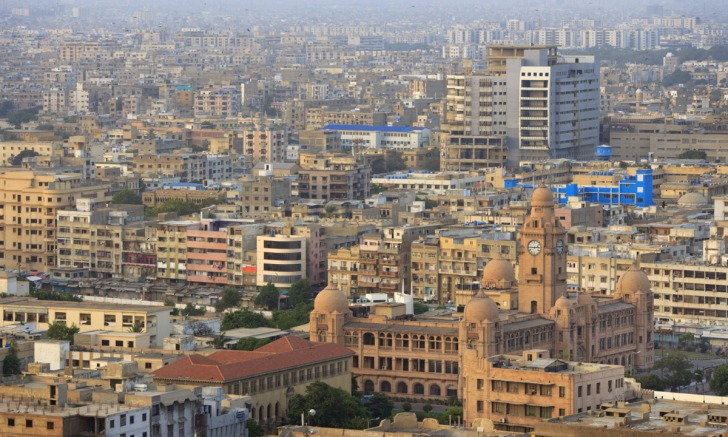
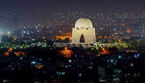
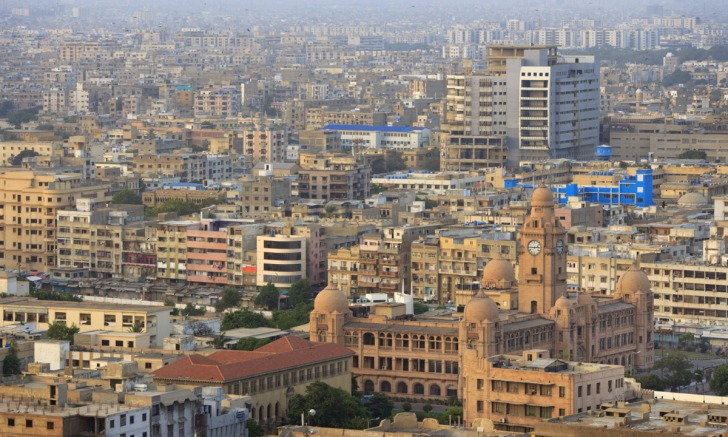
 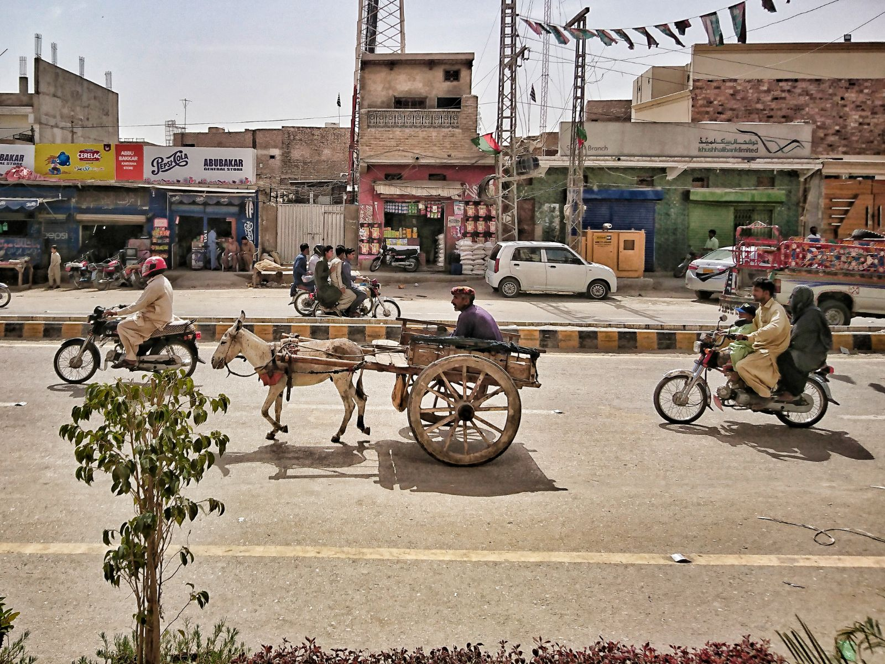
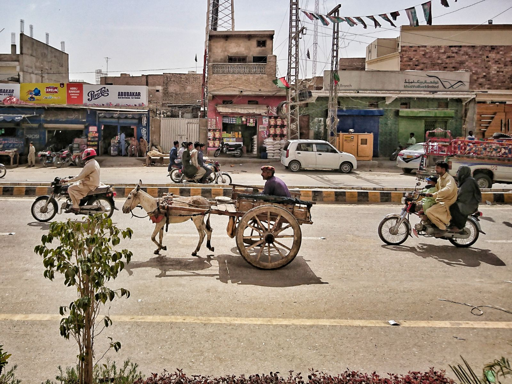
Khyber Pakhtunkhwa (/ˌkaɪbər pəkˈtuːŋkwə/; Pashto: خیبر پښتونخوا; Urdu: خیبر پختونخوا),[4] often abbreviated as KP or KPK, is one of the four provinces of Pakistan. It is located in the northwestern region of the country, along the Afghanistan–Pakistan border. It was previously known as the North-West Frontier Province (NWFP) until 2010, when its name was changed to Khyber Pakhtunkhwa by the 18th Amendment to the Constitution of Pakistan, and is known colloquially by various other names. Khyber Pakhtunkhwa is the third-largest Pakistani province in terms of both its ... Read More

 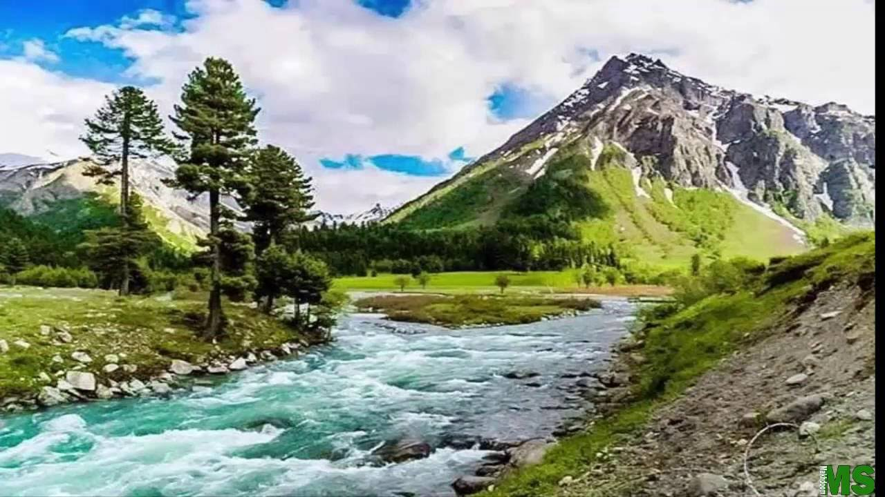
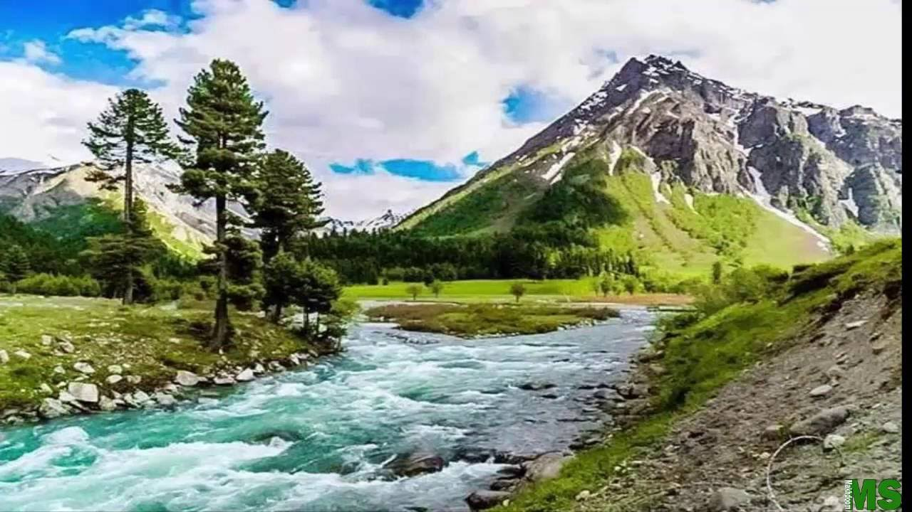
 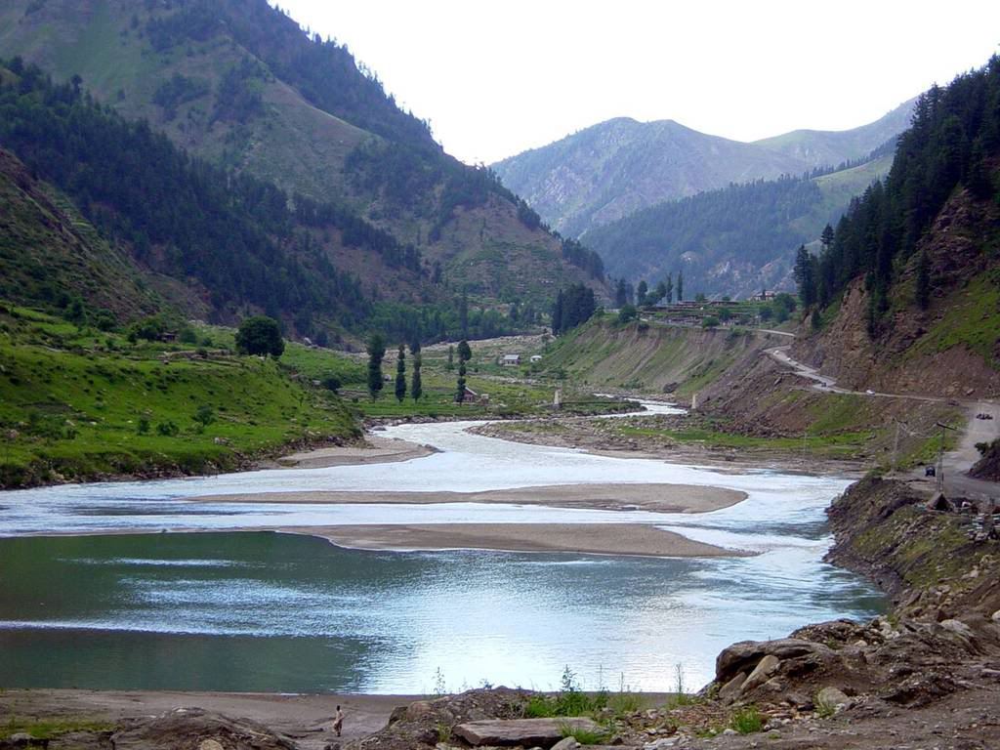
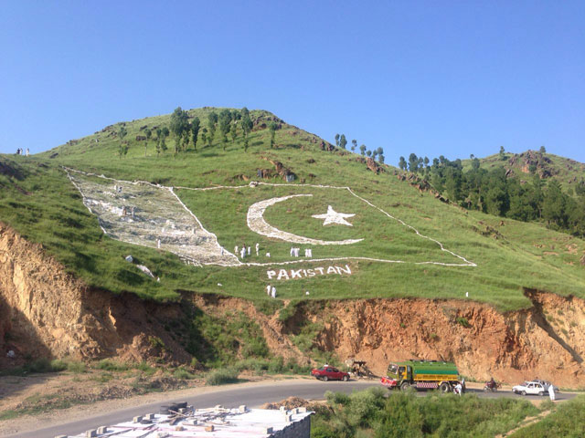
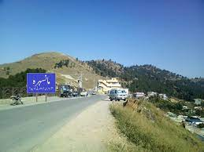
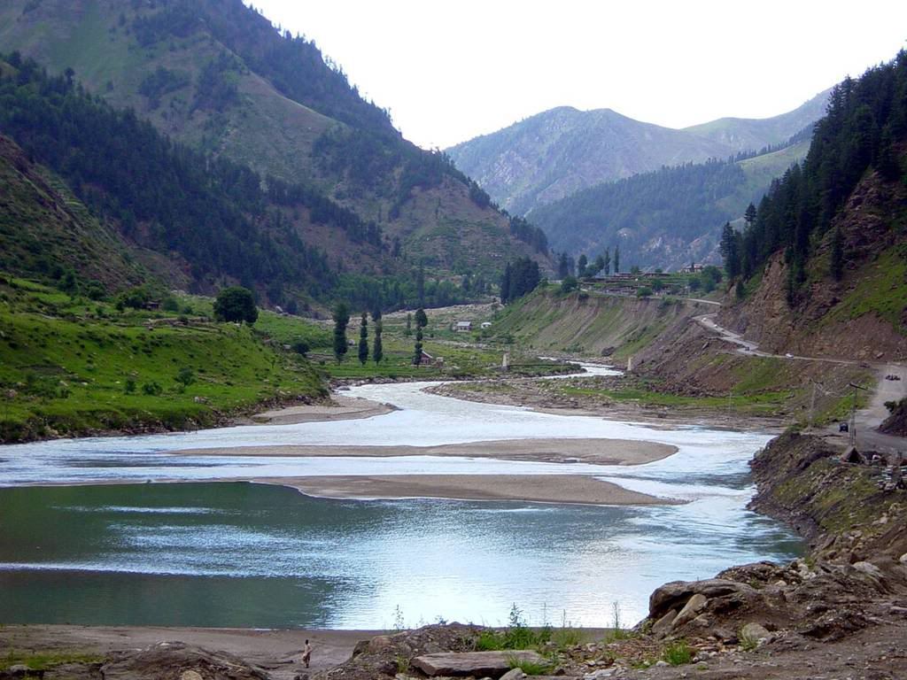
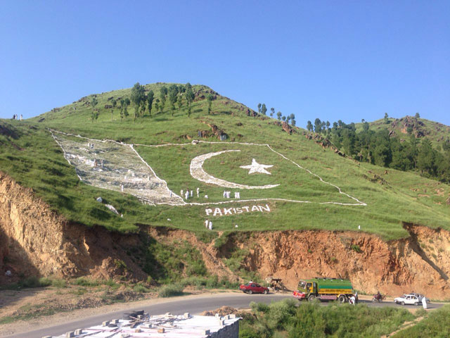
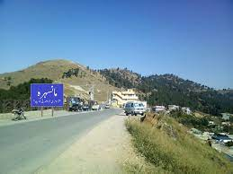
Punjab is one of the four provinces of Pakistan, with a population of about 110,000,000 as of 2021.[2] Forming the bulk of the transnational Punjab region of Pakistan and India, it is bordered by the Pakistani provinces of Sindh, Balochistan, and Khyber Pakhtunkhwa, the enclave of Islamabad, and Pakistan administered Azad Kashmir. It also shares borders with the Indian states of Punjab, Rajasthan, and Jammu and Kashmir union territory. The capital is Lahore, a cultural, historical, economic and cosmopolitan centre of Pakistan where Read More..
Balochistan (/bəˌlɒtʃɪˈstɑːn, -stæn/; Urdu: بلوچستان; Balochi: بلۏچستان) is one of the four provinces of Pakistan. It is the largest province in terms of land area, forming the southwestern region of the country, but is the least populated. Its provincial capital and largest city is Quetta. Read More..
 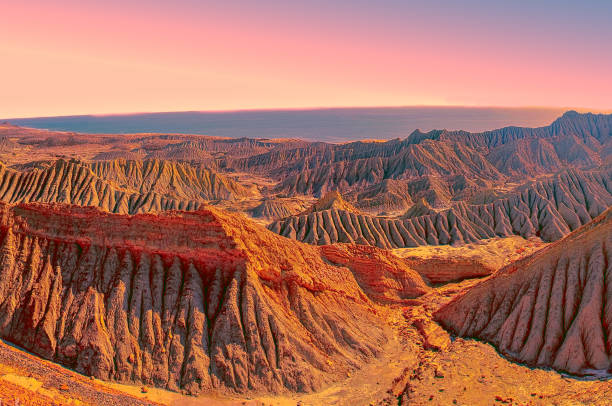
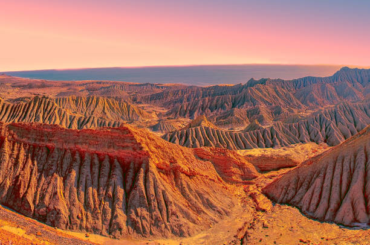

 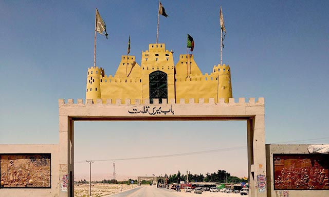
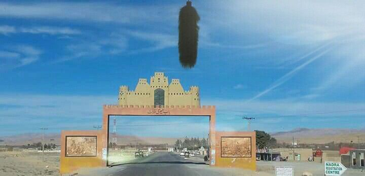
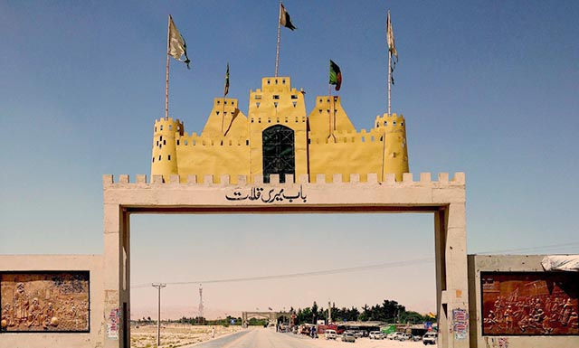
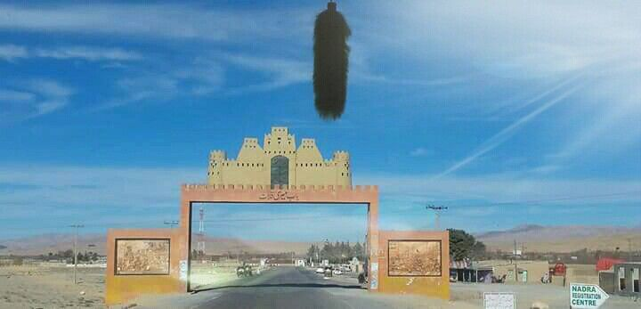